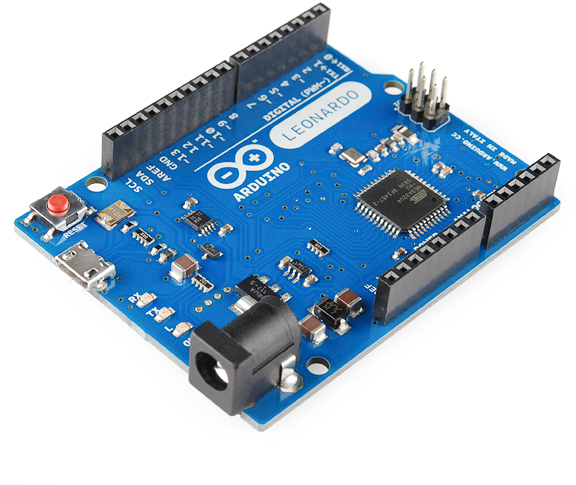
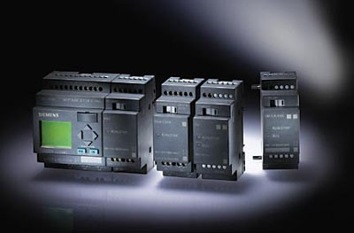
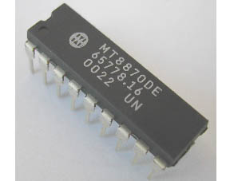

|
الکترونیک برای همه الکترونیک برای همه درباره وبلاگ  با سلام خدمت دوستان این وبلاگ برای دوستداران رشته برق و الکترونیک هست و موضوعات چیرامون این رشته در وبلاگ منتشر می شود مدیر وبلاگ : ایمان جعفری مطالب اخیر آرشیو وبلاگ نویسندگان پیوندهای روزانه پیوندها آمار وبلاگ
به طور معمول در صنعت به دلیل وجود موتور های الکتریکی خاصیت سلفی وجود دارد و همانطور که می دانید این خاصیت سلفی باعث پایین امدن ضریب قدرت شبکه میشود که نتیجه آن این است که مقداری از جریان که مصرف کننده از شبکه میگیرد غیر مفید باشد و مصرف نشود و به صورت مرتب بین شبکه و سلف که در موتور استفاده شده رد و بدل شود . البته این به این معنی نیست که بخواهیم این جریان را با خازن گذاری خذف کنیم نه , این جزو ماهیت و ذات سلف است که مقداری از انرژی را به صورت میدان در خود ذخیره و در نیم سیکل بعد به شبکه پس دهد ما برای رفع مشکل همراه بود جریان غیر مفید با جریان مفید را با موازی کردن خازن رفع می کنیم به این صورت که جریان غیر مفید به جای اینکه از ابتدای شبکه به سمت مصرف کننده بیاید از سمت خازن و مسیر کوتاه که باعث اتلاف توان نشود به سمت سلف می اید.همانطور که میدانید سلف و خازن با هم 90 درجه اختلاف فاز دارن و به همین دلیل جریان هم مدام بین سلف خازن رد و بدل می شود. حال مزایایی که این کار برای ما دارد رو بررسی میکنیم. خازن گزاری رو میگم. 1-کاهش سطح مقطع سیم و کابل بدلیل حذف جریان غیر مفید 2-کاهش تلفات مسیر 3-کاهش هزینه برق مصرفی حال بررسی میکنیم در چه مواردی خازن گزاری به ما کمک میکند تا مشکل را حل کنیم. 1-اگر ضریب قدرت تاسیسات الکتریکی ساختمان از 0.85 پایین تر باشد باید به شرکت برق منطقه ای جریمه برق را پرداخت نمود پس برای بالا اوردن ضریب قدرت باید خازن گزاری کنیم. 2-اگر تلفات تاسیسات به دلیل پایین بودن ضریب قدرت بالا باشد با یک محاسبه ساده می توان فهمید که با خازن گزاری ضرف مدت کوتاهی تمام هزینه ها جبران شده و از آن به بعد سود محسوب میشود. 3-در صورتی که قسمتی از تاسیسات بار اضافی داشته باشد و تقلیل امپراژ مد نظر باشد. 4-اگر قرار باشد ماشین الات جدیدی به شبکه ای که ظرفیت ان پر شده اضافه شود. 5-و…………. برای محاسبه قدرت خازن نیاز به ضریب قدرت فعلی سیستم داریم که آن را از راه های زیر بدست می اوریم. 1-چنانچه تاسیات دارای کنتور اکتیو و راکتیو باشد از روی قبض میزان مصرف اکتیو وراکتو را خوانده و از فرمول زیر ضریب قدرت را بدست می آوریم
نکته قبض ها را در یک دوره یکساله بررسی میکنیم بعد میانگین اکتیو و راکتیو را در فرمول قرار میدهیم. روش دوم : چنانچه تاسیسات فقط دارای یک کنتور اکتیو باشد طبق فرمول زیر عمل میکنیم.
K:ضریب ثابت کنتور n:چرخش دیسک کنتور در t ثانیه i:جریان مدار و v:ولتاژ مدار که در طی سنجش ثابت هستند روش های بالا برای جایی که کسینوس فی متر در اختیار نبود کاربرد دارد اگر که کسینوس فی متر داشتیم به راحتی اندازه میگیریم. پس از بدست اوردن کسینوس فی به شرح زیر عمل میکنیم. برای محاسبه قدرت خازن از فرمول زیر استفاده میکنیم.
در فرمول (فی 1) زاویه در حالت قبل خازن گزاری هست که یه (آرک کسینوس)از ضریب قدرتی که در بالا محاسبه کردیم بدست میاد. (فی 2) زاویه هست که ما میخواهیم به آن برسیم اگه ضریب قدرتی که می خواهیم به آن برسیم یه (آرک کسینوس) بگیریم بدست میاد بعدش جایگذاری می کنیم و قدرت خازن رو بدست میاریم. نوع مطلب : آموزش، برچسب ها : بانک خازن، لینک های مرتبط : افراد زیادی وجود دارند که رشته تخصصی آن ها الکترونیک یا میکرو کنترلر نیست , اما دوست دارند کار با میکروکنترلر را یاد بگیرند و پروژه های خود را,خودشان انجام دهند.اما همیشه ترس از سختی کار و هزینه زیاد آن باعث شده تا سمت این کار نروند.اگر چه کار با میکروکنترلر و ارتباط آن با دیگر قطعات یک کار تخصصی است اما یک راه میانبر برای یادگیری وجود دارد وآن هم آردوینو (Arduino) است.درسال 2005 تعدادی از مهندسین ایتالیایی در یک آزمایشگاه تحقیقاتی واقع در شهر ivera در صدد حل این مشکل محصولی را تولید کردند که مشکل بسیاری را برطرف ساخت.این محصول همان آردوینو (Arduino) بود. 
ادامه مطلب نوع مطلب : آموزش، برچسب ها : آردوینو، Arduino، لینک های مرتبط : Plcمخفف عبارت انگلیسی programmable logic
controller میباشد(كنترل كننده منطقی
برنامه پذیر) وسیله ایست متناسب با برنامه
ای كه دریافت مینماید وظیفه ای را انجام میدهد. بسیاری از صنعتگران نیاز به
كارگیری سیستمهای اتوماتیك را عملا احساس نموده اند و در یافته اند كه تولید بدون
اتوماسیون اقتصادی نمیباشد. Plc وسیله ایست كه درست به همین دلیل ساخته شده است
و اتو ماسیون را با كمترین هزینه و به بهترین شكل ممكن در اختیار قرار میدهد.  ادامه مطلب نوع مطلب : آموزش، برچسب ها : plc، مقاله، لینک های مرتبط : در این پست براتون مقاله ای آماده کردم از میکروکنترلرهای AVR و نحوه شروع کار با انها و خصوصیات کلی آنه و همینطور با پروژه ای ساده برای درک مطلب اورده شده در مقاله امیدوارم خوشتون بیاد  نوع مطلب : آموزش، برچسب ها : دانلود مقاله، میکروکنترلر، میکروکنترلرهای AVR، لینک های مرتبط : .
فرکانس چیه!؟؟؟ .
.
آیا صدا و نور و تصویر و ... هم فرکانس دارن!؟؟
. محدوده ی فرکانسی هر ارگان چیه!؟
.
. آیا من می تونم تو فرکانسی که دوست دارم یه بی سیم بسازم!؟ . . . .
هر موج یه سری مشخصات و ویژگی های خاص خودش رو داره که یکی از اون ویژگی ها فرکانس است. فرکانس می تونه نشون دهنده ی سرعت تغییرات یه موج باشه! مثلا فرکانس برق شهر 50 هرتز است، یعنی دوره ی تناوبش 20 میلی ثانیه است که هر 10 میلی ثانیه جهت مثبت ، منفیش تغییر می کنه؛ اگه فرکانس برق 500 هرتز بود هر 1 میلی ثانیه جهت مثبت و منفیش عوض می شد . . . .
.
صدا، تصویر، نور و خیلی از پدیده های اطرافمون در حقیقت موج هستن و دارای فرکانس هستن، مثلا صدا فرکانس های مختلفی داره که گوش انسان می تونه از 20هرتز تا 20 کیلو هرتز رو بشنوه، البته حیوانی مثل خفاش می تونه تا فرکانس 100 کیلوهرتز هم بشنوه ؛ صدای مرد ها فرکانس پایین تری داره (بم تره) و صدای زن ها فرکانس بالاتری داره (زیر تره). نت های موسیقی هم هر کدوم تو یه فرکانس هستن مثلا فرکانس 440 هرتز مربوط به نت "لا" در اکتاو چهارم هست حالا با هر سازی که بزنی باز این فرکانس رو که بشنوی این نت تو ذهنت میاد ... .
.
فرکانس بین 400 تا 700 تراهرتز رو می تونیم ببینیم! نور مرئی توی این محدوده است که از رنگ سرخ با فرکانس 400 تراهرتز شروع میشه و به بنفش بالاتر از 700 تراهرتز ختم میشه.
.
.
10 به توان 18 تا 10 به توان 20 هرتز هم مربوط به اشعه x هست. که همونطور که میدونید هرچی فرکانس بالاتر بره خطرناک تر میشه که می تونه آسیب های جدی به انسان بزنه!
.
.
ارسال و دریافت اطلاعات رادیویی و ماهواره ای هم هرکدوم تو یه فرکانس مشخص صورت میگیره!
.
.
دیدید وقتی یه جای شلوغ حرف میزنید صدا ها با هم قاطی میشه و نمی فهمید طرف مقابلتون چی میگه!؟ این بخاطر تداخل صدا هاست دیگه! حالا فرض کنید آتش نشانی و پلیس و رادیو جوان و ... هم صداهاشون قاطی بشه! چی میشه!؟
.
. سازمان تنظیم مقررات برای هر ارگان یه محدوده ی فرکانسی مجاز تعریف کرده که فقط حق داره تو محدوده ی فرکانس خودش ارسال و دریافت داشته باشه...
.
مثلا:
.
9 تا 14 کیلوهرتز ناوبری رادیویی
14 تا 20 کیلوهرتز موبایل دریایی
50 تا 54 مگاهرتز کانال 3 تلوزیون
87 تا 108 مگاهرتر رادیو FM
890 تا 960 مگاهرتز باند فرکانسی تلفن همراه
1710 تا 1880 مگاهرتز باند فرکانسی تلفن همراه
14 تا 14.5 گیگاهرتز ماهواره ملی زهره
15.7 تا 16.6 گیگا هرتز تعیین موقعیت رادیویی
و .... نوع مطلب : آموزش، برچسب ها : فرکانس، لینک های مرتبط : در این پست براتون مقاله ای می گزارم که راجع به امنیت در شبکه های اجتماعی و حفظ حریم خصوصی در این فضاها و ارتقا امنیت شما در دنیای مجازی می باشد نوع مطلب : آموزش، برچسب ها : دانلود، دانلود مقاله، مقاله، شبکه های اجتماعی، امنیت، لینک های مرتبط :
فرض كنید ، قصد داشته باشیم با استفاده از یك چراغ قوه یك راهروی بزرگ و مستقیم را روشن نمائیم . همزمان با روشن نمودن چراغ قوه ، نور مربوطه در طول مسیر مسفقیم راهرو تابانده شده و آن را روشن خواهد كرد. با توجه به عدم وجود خم و یا پیچ در راهرو در رابطه با تابش نور چراغ قوه مشكلی وجود نداشته و چراغ قوه می تواند ( با توجه به نوع آن ) محدوده مورد نظر را روشن كرد. در صورتیكه راهروی فوق دارای خم و یا پیچ باشد ، با چه مشكلی برخورد خواهیم كرد؟ @KanounElectronic
در این حالت می توان از یك آیینه در محل پیچ راهرو استفاده تا باعث انعكاس نور از زاویه مربوطه گردد.در صورتیكه راهروی فوق دارای پیچ های زیادی باشد ، چه كار بایست كرد؟ در چنین حالتی در تمام طول مسیر دیوار راهروی مورد نظر ، می بایست از آیینه استفاده كرد. بدین ترتیب نور تابانده شده توسط چراغ قوه (با یك زاویه خاص) از نقطه ای به نقطه ای دیگر حركت كرده ( جهش كرده و طول مسیر راهرو را طی خواهد كرد). عملیات فوق مشابه آنچیزی است كه در فیبر نوری انجام می گیرد.
نوع مطلب : آموزش، برچسب ها : فیبر نوری، لینک های مرتبط :
همانگونه كه قبلا" اشاره گردید ، برخی از سیگنال ها در مواردیكه مسافت ارسال اطلاعات طولانی بوده ( بیش از یك كیلومتر ) و یا از مواد خالص برای تهیه فیبر نوری ( شیشه ) استفاده نشده باشد ، تضعیف و از بین خواهند رفت . در چنین مواردی و بمنظور تقویت ( بالا بردن ) سیگنا ل های نوری تضعیف شده از یك یا چندین " تقویت كننده نوری " استفاده می گردد. تقویت كننده نوری از فیبرهای نوری متععدد بهمراه یك روكش خاص (doping) تشكیل می گردند. بخش دوپینگ با استفاده از یك لیزر پمپ می گردد . زمانیكه سیگنال تضعیف شده به روكش دوپینگی می رسد ، انرژی ماحصل از لیزر باعث می گردد كه مولكول های دوپینگ شده، به لیزر تبدیل می گردند. مولكول های دوپینگ شده در ادامه باعث انعكاس یك سیگنال نوری جدید و قویتر با همان خصایص سیگنال ورودی تضعیف شده ، خواهند بود.( تقویت كننده لیزری) @KanounElectronic
نوع مطلب : آموزش، برچسب ها : تقویت کننده، لینک های مرتبط :
تاریخ الکتریسیته به ایران و بینالنهرین باستان در دوره اشکانیان برمیگردد و اولین باطری اختراع شده را به اشکانیان نسبت میدهند که به خاطر محل یافتش به باطری بغدادی شهرت گرفته است.
الکتریسیته امروزی، تواناییهای خودش را بیشتر مدیون زحمات فیزیکدانانی همچون، الساندر ولت، آندره آمپر، نیکلا تسلا، جرج سیمون اهم، مایکل فارادی و توماس ادیسون است.
تاریخچه الکترونیک
الکترونیک علم مطالعه ی عبور جریان الکتریکی از مواد مختلف - مانند نیمه هادیها, مقاومتها, القاگرها و خازنها - و آثار آن است. الکترونیک همچنین به عنوان شاخهای از فیزیک نظری شناخته میشود. طراحی و ساخت مدارهای الکترونیکی برای حل مشکلات عملی, قسمتی از مباحث موجود در مهندسی الکترونیک و را تشکیل میدهد.
در برخی موارد مطالعه المانهای جدید نیمههادی و فنآوریها نزدیک به آن, شاخهای از فیزیک در نظر گرفته میشود. این مقاله بیشتر به مفاهیم مهندسی الکترونیک میپردازد.
مختصری بر سیستمها و مدارهای الکترونیکی
مدارهای الکترونیکی برای ایفا کردن وظایف مختلفی استفاده میشوند. کاربردهای اصلی مدارهای الکترونیکی عبارتند از:
۱) کنترل و پردازش دادهها
۲) تبدیل و توزیع توان الکتریکی
هر ردی این کاربردها با ایجاد و آشکارسازی میدان الکترومغناطیسی و جریان الکتریکی سرو کار دارند. گرچه از انرژی الکتریکی در سالهای انتهایی قرن ۱۹ برای انتقال پیام به وسیله تلگراف و تلفن استفاده میشد اما بیشتر پیشرفتهای مربوط به علم الکترونیک پس از ساخت رادیو شکل گرفت. در یک نگاه ساده, یک سیستم الکترونیکی را میتوان به سه بخش تقسیم کرد:
ـ ورودی: حسگرهای الکترونیکی و مکانیکی (یا مبدلهای انرژی) . این تجهیزات سیگنالها یا اطلاعات را از محیط خارج دریافت کرده و سپس آنها را به جریان, ولتاژ یا سیگنالهای دیجیتال تبدیل میکنند.
ـ پردازشگر سیگنال: این مدارها در واقع وظیفه اداره کردن, تفسیر کردن و تبدیل سیگنالهای ورودی برای استفاده آنها در کاربرد مناسب را بر عهده دارند. معمولاً در این بخش پردازش سیگنالهای مرکب بر عهده پردازشگر سیگنالهای دیجیتال است.
ـ خروجی: فعال کنندهها یا دیگر تجهیزات (مانند مبدلهای انرژی) که سیگنالهای ولتاژ یا جریان را به صورت خروجی مناسب در خواهند آورد (برای مثال با ایفای یک وظیفه فیزیکی مانند چرخاندن یک موتور). برای مثال یک تلویزیون دارای هر سه بخش بالا است.
ورودی تلویزیون سیگنالهای پراکنده شده را دریافت کرده (به وسیله یک آنتن یا کابل) و آنها را به ولتاژ و جریان مناسب برای کار دیگر تجهیزات تبدیل میکند.
پردازشگر سیگنال پس از دریافت دادهها از ورودی اطلاعات مورد نیاز مانند میزان روشنایی, رنگ و صدا را از آن استخراج میکند.
در نهایت قسمت خروجی این اطلاعات را دویاره به صورت فیزیکی در خواهد آورد این کار به وسیله یک لامپ اشعه کاتدیک و یک بلندگوی آهنربایی انجام خواهد شد. نوع مطلب : آموزش، برچسب ها : تاریخچه برق و الکترونیک، لینک های مرتبط :
ادیسون به خانه بازگشت یاد داشتی به مادرش داد
گفت : این را آموزگارم داد گفت فقط مادرت بخواند
مادر در حالی که اشک در چشمان داشت برای کودکش خواند:
فرزند شما یک نابغه است واین مدرسه برای او کوچک است آموزش او را خود بر عهده بگیرید
سالها گذشت مادرش از دنیا رفته بود روزی ادیسون که اکنون بزرگترین مخترع قرن بود در گنجه خانه خاطراتش را مرور میکرد برگه ای در میان شکاف دیوار اورا کنجکاو کرد آن را دراورده و خواند
نوشته بود : کودک شما کودن است از فردا اورا به مدرسه راه نمی دهیم
ادیسون ساعتها گریست
ودر خاطراتش نوشت :
توماس آلوا ادیسون
کودک کودنی بود که توسط یک مادر قهرمان به نابغه قرن تبدیل شد نوع مطلب : آموزش، برچسب ها : داستان، مشاهیر برق، ادیسون، لینک های مرتبط : نیکولا تسلا زاده ۱۰ ژوئیه۱۸۵۶ در امپراتوری اتریش-مجارستان - متوفی ۷ ژانویه۱۹۴۳ در نیویورک در ایالت نیویورک، مخترع، مهندس برق و مهندس مکانیک صربی الاصل آمریکایی است. وی بیشتر به دلیل سهمش در طراحی سیستم نوین برقرسانی براساس جریان متناوب #ac شناخته میشود.
تسلا پیش از مهاجرت به آمریکا، در زمینهٔ مکالمه از راه دور و مهندسی برق تجاربی کسب کرده بود. وی در سال ۱۸۸۴ به ایالات متحدهٔ آمریکا مهاجرت کرد تا در شهر نیویورک برای توماس ادیسون مشغول به کار شود. تسلا پس از مدتی کوتاه با کمک حامیان مالی فعالیت مستقل خود را آغاز و با احداث آزمایشگاهها و کارخانجاتی، اقدام به تولید طیف گستردهای از محصولات الکتریکی کرد. حق امتیازموتور القایی و ترانسفورماتور جریان متناوب که از اختراعات ثبت شدهٔ تسلا هستند، توسط جورج وستینگهاوس، که برای مدت کوتاهی نیز تسلا را به عنوان مشاور خود استخدام کرده بود، خریداری شد. فعالیتهای تسلا در سالهای آغازین توسعه توان الکتریکی همچنین منجر به وارد شدن او در اختلافات شرکتی بر سر اتخاذ جریان متناوب یا جریان مستقیم به عنوان استاندارد انتقال توان الکتریکی شد. از این اختلافات به نام جنگ جریانها یاد میشود.
تسلا امروزه مخترع رادیو و نیز «مخترع قرن بیستم»شمرده میشود.
تسلا حداقل در سه کشور، کرواسی، صربستان و ایالات متحده آمریکا به عنوان قهرمانی ملی مورد تجلیل است.
+ عکس بالا آزمایش فشار قوی تسلا را نشان میدهد نوع مطلب : آموزش، برچسب ها : تسلا، لینک های مرتبط : روزی خبرنگار جوانی از #ادیسون پرسید: آقای ادیسون شنیدم برای اختراع #لامپ تلاش های زیادی کرده ای، اما موفق نشده ای، چرا؟ پس از ۹۹۹ بار شکست همچنان به فعالیت خود ادامه می دهی؟ ادیسون با خونسردی جواب می دهد:«ببخشید آقا من ۹۹۹ بار شکست نخورده ام، بلکه ۹۹۹ روش یاد گرفته ام که لامپ چگونه ساخته نمی شود.» طرز نگرش می تواند آنچه که شکست نامیده می شود را تبدیل به معجزه کند نوع مطلب : آموزش، برچسب ها : داستان های برقی، توماس ادیسون، لینک های مرتبط :
قصد داریم کمی درباره نویز صحبت کنیم. به زبان ساده میشه گفت به هر اختلال ناخواسته ای نویز میگیم پس با یه تعریف چهارچوب دار طرفیم یعنی تو هر حوزه ای با پدیده ی نویز ممکنه مواجه بشیم مثلا آلودگی موجود در هوا یه نوع نویز محیط زیستیه چون ما اصلا نمیخوایم باشه ولی در اثر یه سری عوامل بوجود میاد و ما دوست داریم همیشه آلودگی رو کم یا از بین ببریم.
در این پست ما قصد داریم با نویزهای الکترومغناطیسی آشنا بشیم و تاثیر آن بر مدارتمون و راه های جلوگیریشو بررسی کنیم.
در حوزه مهندسی برق به جریان , ولتاژ یا میدان الکترومغناطیسی ناخواسته ای که بر روی سیگنال اصلی ما سوار میشن و تشخیص سیگنالو دشوار میکنند , نویز میگیم که این سیگنال ها میتونه برای مدارات ما مخرب باشه و کارکردشونو دچار اختلال کنه یا حتی بسوزونتشون.
همونطور که میدونیم بارهای الکتریکی ساکن مولد میدان الکتریکی هستن و حرکت یکنواخت بارها ( یا همون جریان الکتریکی) میدان مغناطیسی رو ایجاد میکنه و اگر حرکت الکترونها به صورت شتابدار باشه , تشعشع الکترومغناطیسی رو موجب میشه. طبق نظریات الکترومغناطیس (که از مرحوم فارادی به یاد مونده) میدان های الکترومغناطیسی میتونه ولتاژ و جریان در مدار بوجود بیاره و همینطور برعکس.
پس هدف ما درحوزه ی برق کاهش میدانهای الکترومغناطیسی در نتیجه کاهش ولتاژ و جریان ناخواسته ای که در اثر اون در مدارات و سیستم هامون بوجود میاد. به این مبحث در مهندسی برق EMI(Electromagnetic interference) یا تداخل الکترومغناطیسی میگن.
حالا منابع نویز چیا میتونه باشه؟ به صورت معمول 3 دسته منبع برای نویزها در نظر میگیرن: 1- منابع نویز ذاتی : مثل نویز گرمایی که در اثر نوسانات تصادفی در سیستم های فیزیکی بوجود میاد مثلا با افزایش دما ممکنه کار یک آی سی دچار اختلال بشه 2- نویز ادوات الکتریکی موجود در مدار: نویزهایی که توسط وسایلی که در مداراتمون هست بوجود میاد مثل نویزای ناشی از موتورها,سوییچ ها,فرستندههای رادیویی و ... 3- نویز ناشی از اغتشاشات طبیعی و جوی : مثل رعد و برق و تشعشعات خورشیدی. که بحث اصلی ما همون مورد شماره 2 هست.
برای کاهش نویز در مهندسی برق بحث EMC (Electromagnetic compatibility) سازگاری الکترومغناطیسی مطرح میشه یعنی مداراتی بسازیم که با این نویزهای الکترومغناطیس سازگار باشه و رو مدار ما اثری نذاره پس بایستی اول راه های نفوذ نویز به مدارتمونو بشناسیم تا روش جلوگیریشو بفهمیم. به 2 روش نویز میتونه رو مدار ما اثر بذاره:
1- کوپلاژ توسط میدان های الکتریکی و مغناطیسی ) و الکترومغناطیسی ( مانند تشعشع الکترو مغناطیسی : یعنی در اثر میدانهای الکترومغناطیسی که یه سری وسیله هامون در مدار مثل سلف و ترانس و کلید زنی و ... ایجاد میکنه روی سایر ادوات مدارمون (بویژه مدارات آنالوگ و دیجیتال ) ما نویز بیوفته.
2- کوپلاژ هدایتی مانند انتقال نویز از طریق خط تغذیه مشترک : به این معنیه که روی تغذیه ی مدارمون نویز بیوفته و این نویز در کارکرد قطعات الکتریکیمون مشکل ایجاد کنه.
خب حالا چندتا نکته عملی کاهش نویز تو مداراتمونو میگیم :
1- جدا کردن زمین مدارات :
اگه مدارمون دارای بخش های زیر هست بهتره زمین هاشون جدا باشه و به صورت زیر تقسیم بندی کنیم:
زمین آنالوگ : مثل تقویت کننده هامون شامل آپ امپ ها و ...
زمین دیجیتال : شامل مدارات کنترلی مثل میکروکنترلر و ...
زمین قدرت )رله ها ، موتورها , سوییچ ها و مانند آن( : مداری که بیشترین نویز رو ایجاد میکنه
این تقسیم بندی به این علت انجام میشه که نویزهایی که تو هر کدام از بخش هامون هست ممکنه برا خود اون بخش خیلی چیز مهمی نباشه اما برا بخش دیگه فاجعه باشه مثلا نویز روی سوییچ قدرت مثل IGBT که قراره مثلا 1200 ولت رو قطع و وصل کنه با فرکانس چند کیلوهرتز مثلا تو حد 20 -30 ولت باشه که برا بخش قدرت مشکلی پیش نیاد ولی این نویز از طریق زمین مشترک (اگر جدا نکنیم) به بخش دیجیتال ما که قراره مثلا با ولتاژ 3.3 یا 5 ولت کار کنه کل مدار دیجیتالو بسوزونه. روش جداسازی هم معمولا یا با ترانس ایزوله یا اپتوکوپلر و یا استفاده مبدلهای MinMax هست که به ما یه سری ولتاژ میده که بهم ربطی نداره.
نوع مطلب : آموزش، برچسب ها : نویز ، مشکلات مدار، لینک های مرتبط :
این نوع از دیودها یک ولتاژ مرجع پایدار را فراهم می کند، در نتیجه یک نوع بسیار مفید است و در مقادیر گسترده ای از ولتاژ زنر وجود دارد که استفاده می شود. در این نوع از دیودها , دیود در بایاس معکوس خود کار میکند، و در یک ولتاژ خاص که در نمودر ولتاژ جریان مشخص است , شکسته میشود. در دیود زنر اگر جریان عبوری را توسط یک مقاومت محدود کنیم یک ولتاژ پایدار تولید میشود. در منابع تغذیه، این دیودها به طور گسترده ای برای ایجاد یک ولتاژ مرجع مورد استفاده میشود نوع مطلب : آموزش، برچسب ها : الکترونیک، دیود، دیود زنر، آموزش، لینک های مرتبط : |
||
|
|